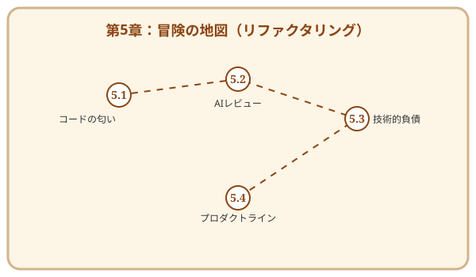

第5章 リファクタリング：彫刻を磨く喜び
この章で手に入れる力
どれほど完璧な設計図を描いても、実際にコードを書き進めるうちに、現場には「綻び」が生じます。時間の不足、要求の変化、理解の深化——。それらはコードを少しずつ複雑にし、読みづらく、壊れやすいものに変えていきます。
この章で学ぶリファクタリング（Refactoring）は、外部から見た振る舞いを変えずに、内部の構造を美しく整える技術です。それは、荒削りの石像を丁寧に磨き上げ、命を吹き込む彫刻家の仕事に似ています。
そして忘れてはならないのが、第4章で手に入れたテストという安全網です。テストが「振る舞いが変わっていない」ことを保証してくれるからこそ、安心してコードの内部構造を磨き上げることができます。リファクタリングとテストは、切っても切れない相棒同士なのです。
あなたはここで、AIという「鋭い彫刻刀」を使いこなし、不吉な「コードの匂い」を嗅ぎ分け、技術負債という魔物を手懐ける術を身につけます。
冒険の地図

読了後のあなた
この章を読み終えると、あなたは以下のことができるようになります。
- 嗅ぎ分ける: 修正が必要な「悪いコード」を直感と論理で特定できる
- 磨く: 既存の機能を壊さずに、コードの可読性と保守性を向上させられる
- 共闘する: AIに適切な指示を出し、複雑なリファクタリングを安全に実行できる
- 管理する: 技術負債を適切に評価し、チームで計画的に返済できる
- 広げる: 単一のコードから、再利用可能な「プロダクトライン」への進化を構想できる
磨き抜かれたコードには、美しさと強さが宿ります。あなたの彫刻を完成させましょう。
さらに学ぶためのリソース（章全体）
- 📚 書籍: Martin Fowler『リファクタリング 第2版』（リファクタリングの原典。第2版ではJavaScriptを例に現代化）
- 📚 書籍: Robert C. Martin『Clean Code アジャイルソフトウェア達人の技』（「意味のある命名」など、コードの美学を徹底解説）
- 📚 書籍: Michael Feathers『レガシーコード改善ガイド』（テストのないコードをいかに安全にリファクタリングするかを説く、現場の戦術書）